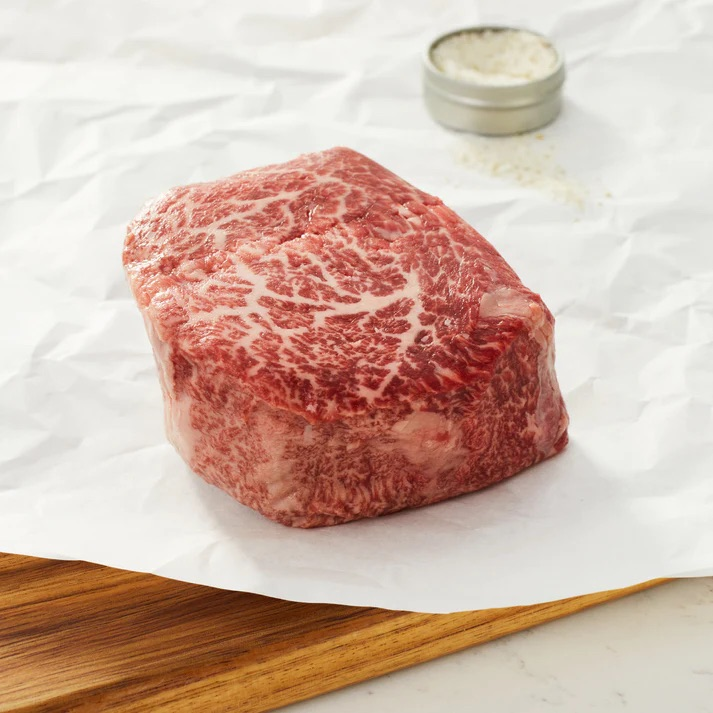
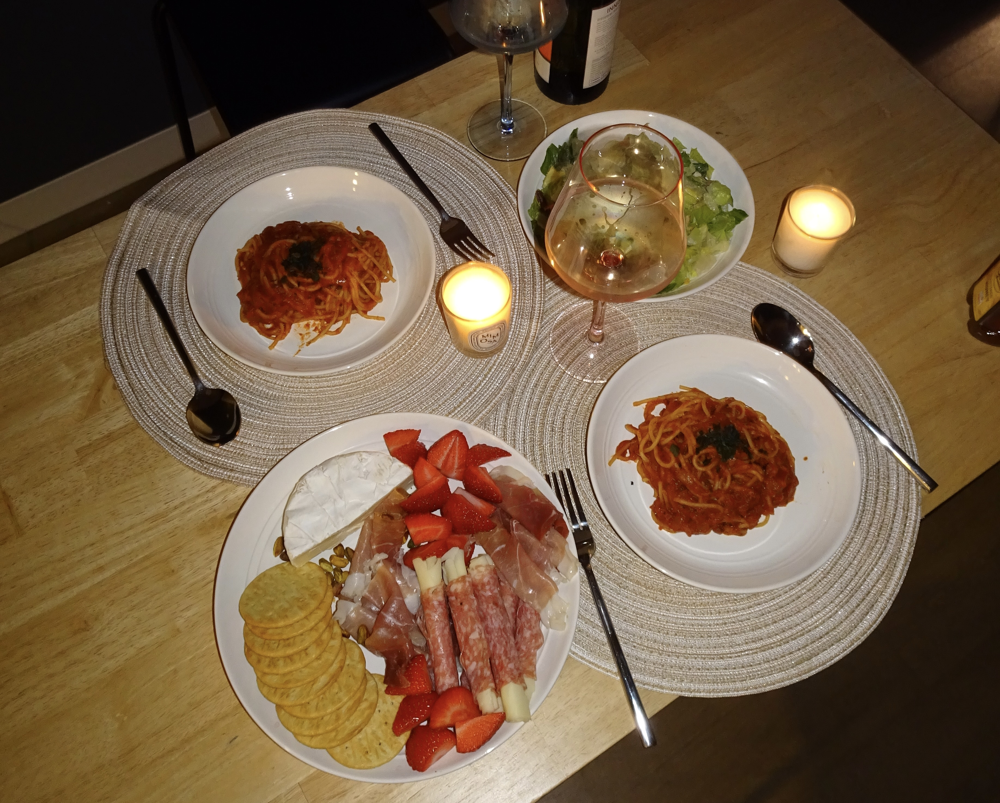
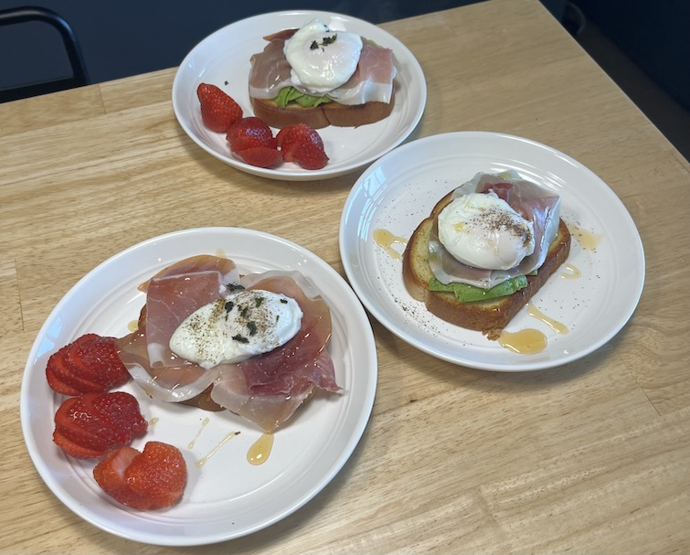
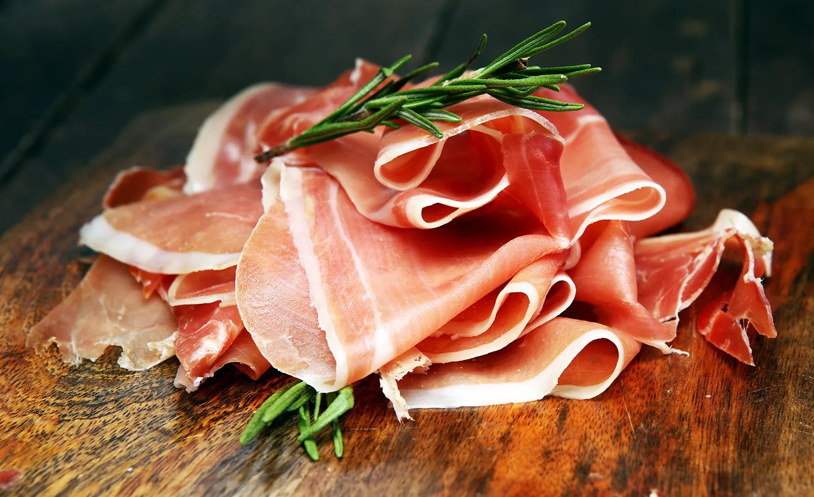

Filet Mignon
- Origin: French
- Source: Personal Recipe
- Category: Main Dish

Filet Mignon is a French steak dish. It is the epitome of fine dining and is the perfect choice for special occasions or when you want to treat yourself to an exceptional meal.
Recipe Ingredients
- Filet mignon steaks
- Salt and black pepper
- Olive oil
- Cloves garlic, minced
- Fresh rosemary
- Unsalted butter
- Red wine
Recipe Steps
- Preheat your oven to 400°F (200°C).
- Season both sides of the filet mignon steaks generously with salt and black pepper.
- In an oven-safe skillet, heat the olive oil over high heat until it's almost smoking.
- Carefully add the seasoned filet mignon steaks to the hot skillet. Sear the steaks for about 2-3 minutes on each side, or until a golden-brown crust forms.
- Add minced garlic and rosemary sprigs to the skillet during the last minute of searing for additional flavor.
- Transfer the skillet with the seared steaks to the preheated oven. Roast for about 5-7 minutes for medium-rare, or longer to your preferred level of doneness.
- Remove the skillet from the oven and transfer the steaks to a plate. Cover them loosely with aluminum foil and let them rest for 5 minutes.
- While the steaks are resting, you can optionally deglaze the skillet with red wine or beef broth, scraping up any browned bits from the bottom. Reduce the liquid by half and whisk in the butter to create a simple pan sauce.
- Serve the Filet Mignon steaks hot, drizzled with the pan sauce if desired.
Additional Food images


Tomato Basil Spaghetti
- Origin: Italian
- Source: Personal Recipe
- Category: Main Dish

Tomato Basil Spagetti is a timeless combination of simple yet exquisite ingredients, coming together to not only satisfy the palate but also capture the essence of comfort and tradition.
Recipe Ingredients
- Spaghetti
- Olive oil
- Large ripe tomatoes
- Fresh basil leaves
- Salt
- Pepper
Recipe Steps
- Cook the spaghetti according to the package instructions until al dente. Drain and set aside.
- In a large skillet, heat the olive oil over medium heat. Add the minced garlic and sauté until fragrant.
- Dice the tomatoes and add them to the skillet. Cook for 5-7 minutes, seasoning with salt and pepper to taste.
- Add the cooked spaghetti to the skillet, tossing to combine with the tomato mixture. Cook for an additional 2-3 minutes.
- Plate the spaghetti and garnish with fresh basil leaves.
Additional Food images


Prosciutto Avocado Toast
- Origin: Italian and American Fusion
- Source: Personal Recipe
- Category: Brunch

Prosciutto Avocado Poached Egg Toast is a fusion of Italian and American flavors. This dish combines the savory taste of prosciutto with the creaminess avocado and the gooey texture of a poached egg.
Recipe Ingredients
- 2 slices of artisanal bread (such as sourdough or ciabatta)
- 2 large eggs
- 2 slices of prosciutto
- 1 ripe avocado, thinly sliced
- 2 tablespoons white vinegar
- Salt and black pepper, to taste
- Fresh chives or microgreens (optional, for garnish)
Recipe Steps
- Toast the slices of bread until they reach your desired level of crispiness.
- While the bread is toasting, bring a large pot of water to a gentle simmer. Add the white vinegar to the simmering water.
- Carefully crack one egg into a small bowl. Create a gentle whirlpool in the simmering water by stirring it with a spoon, and then slide the egg into the center of the whirlpool. Poach the egg for about 3-4 minutes for a runny yolk, or longer for a firmer yolk. Repeat with the second egg.
- While the eggs are poaching, arrange the prosciutto slices on top of the toasted bread, followed by the thinly sliced avocado.
- When the poached eggs are done, remove them from the water with a slotted spoon, allowing excess water to drain. Place one poached egg on each toast.
- Season the eggs with salt and black pepper to taste, and garnish with fresh chives or microgreens if desired.
- Serve the Prosciutto Avocado Poached Egg Toast immediately, and enjoy!
Additional Food Images
